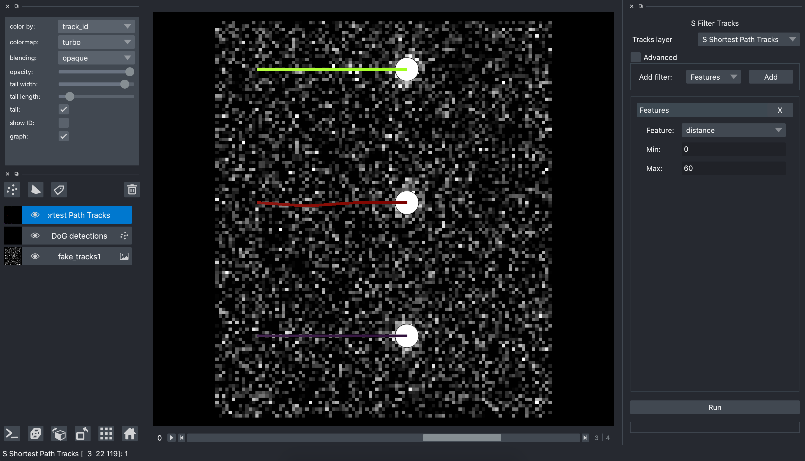

Guide¶
This page aims at guiding the napari-stracking user step by step to build a pipeline for particles tracking in 2D+t or 3D+t images. The image used in this documentation is available [here]. A classical particles tracking pipeline is made of 5 sequential steps:
Particles detection frame by frame
{kind=link}
Particles properties calculation (optional)

Particles linking

Tracks features extraction (optional)
{kind=link}
Tracks filtering (optional)

Particles detection¶
The particles detection step is performed frame by frame to independently detect the particles in each time frame. Many particles (or spots) detection algorithms have been proposed in the scientific literature. The choice of the most appropriate particles detector should be data driven. Furthermore, the performance of a particles detector is sensitive to the image quality. An image denoising pre-processing step is sometime needed to improve the particles detection.
Particles detections plugins available in napari-stracking are:
S Detector DoG
The Difference of Gaussian (DoG) detector enhance spots in images by calculated a filtered image which is the difference between two versions of the image filtered with a gaussian filter with different sigmas (width) [wiki DoG]. The S Detector DoG plugin uses the implementation from skimage DoG
We start the S Detector DoG by opening Plugins>napari-stracking>S Detector DoG

The input is an image layer. If only one image layer is opened in napari, it is automatically selected. Otherwise, we select the image layer we want to process. The S Detector DoG plugin has 3 parameters:
Min sigma: is the full width at half max intensity of the smallest particles we want to detect. The unit is the one specified in the image layer scale. In our example we set 4 since the spots are about 4 or 5 pixels width.
Max sigma: is the maximum width of the spots we want to detect. It is set similarly to Min sigma. In our example we set 5 since the spots are about 4 or 5 pixels width.
Threshold: is the minimum intensity of the spots (in the DoG filtered image) that are considered as particles of interest. This parameter is image dependent and can be chosen by trial and error. In our example, a threshold of 0.2 allows to detect all the particles without false alarm.
S Detector DoH
The Determinant of Hessian (DoH) detector is a multi-scale spot detector that uses the determinant of the hessian matrix of the input image [wiki DoH]. The S Detector DoH plugin uses the implementation from skimage DoH
We start the S Detector DoH by opening Plugins>napari-stracking>S Detector DoH

The input is an image layer. If only one image layer is opened in napari, it is automatically selected. Otherwise, we select the image layer we want to process. The S Detector DoH plugin has 4 parameters:
Min sigma: is the full width at half max intensity of the smallest particles we want to detect. The unit is the one specified in the image layer scale. In our example we set 4 since the spots are about 4 or 5 pixels width.
Max sigma: is the maximum width of the spots we want to detect. It is set similarly to Min sigma. In our example we set 5 since the spots are about 4 or 5 pixels width.
Num sigma: is the number of sigmas used for the multi-scale analysis. In out example we set 2 since the spots are almost all the same size.
Threshold: is the minimum intensity of the spots (in the DoH filtered image) that are considered as particles of interest. This parameter is image dependent and can be chosen by trial and error. In our example, a threshold of 0.01 allows to detect all the particles without false alarm.
{kind=link}
S Detector LoG
The Laplacian of Gaussian (LoG) detector is a multi-scale spot detector that uses the laplacian operator on the input image filtered with a Gaussian filter to enhance spots. The scale is determined by the size of the Gaussian filter. [wiki LoG]. The S Detector LoG plugin uses the implementation for skimage LoG
To start the S Detector LoG open Plugins>napari-stracking>S Detector LoG

The input is an image layer. If only one image layer is opened in napari, it is automatically selected. Otherwise, we select the image layer we want to process. The S Detector LoG plugin has 4 parameters:
Min sigma: is the full width at half max intensity of the smallest particles we want to detect. The unit is the one specified in the image layer scale. In our example we set 4 since the spots are about 4 or 5 pixels width.
Max sigma: is the maximum width of the spots we want to detect. It is set similarly to Min sigma. In our example we set 5 since the spots are about 4 or 5 pixels width.
Num sigma: is the number of sigmas used for the multi-scale analysis. In out example we set 2 since the spots are almost all the same size.
Threshold: is the minimum intensity of the spots (in the LoG filtered image) that are considered as particles of interest. This parameter is image dependent and can be chosen by trial and error. In our example, a threshold of 0.2 allows to detect all the particles without false alarm.
{kind=link}
Particles properties¶
The particles properties plugin allows to calculate properties of each particles (mean intensity for example). This step is not mandatory, but can be very useful for the tracks analysis depending on the scientific application. To ease the properties calculation, all the properties are grouped in a single plugin called S Particles Properties.
To open the particles properties plugin, open the plugin: Plugins>napari-stracking>S Detector DoG

This plugin needs two inputs:
Image layer: is the layer containing the raw image
Points layer: is the layer containing the detections (ie. the localisation of particles)
The plugin contains a list of possible features (or properties). To add a feature, we can select it in the list, and then click on the Add button. The feature appears in the panel. In this example, we selected the Intensity feature that needs one parameter: Radius. It is the radius used to calculate the particles intensity features. In this example we then set radius to 2.5 since it is the average radius of our particles. We can then click on Run.
When the run is finished, there is no new layer in napari since it is the input points layer that is updated. To visualize the particles properties, we click on the particles features button:
Particles linking¶
Particles linking is the second main step of a particles tracking pipeline. It goal is to link close particles in neighboring time frame to create the tracks. Several strategies have been proposed in the scientific literature to perform this task. Available linkers in the stracking plugin suite are:
S Linker Shortest Path
The S Linker Shortest Path algorithm links the detected particles along the time frame using the following strategy. First, a connection graph is created to connect all the neighboring particles of neighboring frames. Then, it iteratively estimates the optimal trajectories by applying a shortest path algorithms with a graph pruning strategy. The result is a set of trajectories. This tracker cannot handle split/merge events.
To open the S Linker Shortest Path plugin, open the plugin: Plugins>napari-stracking>S Linker Shortest Path
This plugin has one input which is the layer containing the particles detection. The two parameters are:
max distance: is the maximum distance that a particle can move between two consecutive frames. In our example we set 100 since we are sure that our particles moves less that 100 pixels between two consecutive frames.
gap: is the number of neighboring frames used to search for a particle connection. In our example we set 1 since we do not have missing detection and then want to connect only with the next frame. If we expect having missing detections we can set a gap of 2 to enable connecting a particle from frame n to frame n+2
We then click, Run and when the processing is finished, we have a new layer with the tracks.
Tracks features¶
The tracks features extraction plugin allows to measure features of trajectories like length, distance… This step is not mandatory, but very useful for the tracks analysis depending on the scientific application. To ease the tracks features calculation, all the features are grouped in a single plugin called S Tracks Features.
{kind=link}
The input is a Tracks layer that contains the tracking result. Then, the Add feature menu allows to select the features we want to extract. In our example we selected the following features:
Length is the number of time points in the track.
Distance is the full distance that the particles moved (frame by frame).
Displacement is the distance between the starting point and the ending point of the track.
Clicking Run starts the computation of the features. When the calculation is finished, clicking on the button tracks feature allows to visualize the feature:
We can see that our 3 trajectories moves horizontally the same displacement, and almost the same distance during 5 frames.
Tracks filtering¶
Particles tracking pipelines are never perfect, and most of the time tracks with no interest are detected by the tracking pipeline. For example they can be tracks of not moving object which are not interesting for some scientific applications. the S Filter Tracks plugins is a post processing plugin that aims at removing tracks with unrealistic properties (false positive).
To open the S Filter Tracks plugin, open the plugin: Plugins>napari-stracking>S Filter Tracks
{kind=link}
The input, is the layer containing the tracks. We can then select the features we want to filter with. In our fake example we want here to remove the track with a Distance above 60 pixels. To do so, we select the distance feature and set a minimum value of 0, and a maximum value of 60. We then click Run. When it finished we have a new layer with only 2 tracks since the tracks with a Distance above 60 pixels has been removed: